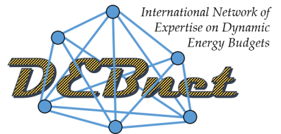
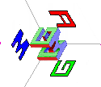

Welcome to the DEB portal

What is DEB theory?
DEB stands for Dynamic Energy Budget. "Dynamic" means that the full life cycle of an individual (micro-organism, plant, or animal) is followed in a changing environment. DEB theory deals with the processes of "Energy" uptake and use, but also with mass, including stoichiometric constraints and isotopes. "Budget" means that balances are respected explicitly. DEB theory unifies the commonalities between organisms as prescribed by the implications of energetics, which links different levels of biological organisation (cells, organisms and populations). The theory presents simple mechanistic rules that describe the uptake and use of energy and nutrients (substrates, food, light) and the consequences for physiological organisation throughout an organism's life cycle, including the relationships of energetics with aging and effects of toxicants. All living organisms are covered in a single quantitative framework, the predictions of which are tested against a wide variety of experimental results at the various levels of biological organisation.The advantage of applying the same family of models to all species is that species can be compared on the basis of parameter values. Parameter values are taken to be individual-specific, where the scatter of parameters for con-specific individuals is typically less than between species. The patterns in the co-variation of parameter values across populations and species is an increasingly important topic in DEB research, now parameters of thousands of species are known, as shown in the Add-my_Pet (AmP) collection for animal species. The processes of ecological and evolutionary adaptation complement patterns that result from plain physics.
See also the DEB theory article on Wikipedia. The DEBcalendar gives for an overview of research milestones in an historic perspective.
Mirrors
The AmP collection has mirror sites at| VU Univ | Amsterdam | https://www.bio.vu.nl/thb/deb/deblab/add_my_pet/ |
| IUEM | Brest | https://debtheory.fr/ |
Events & courses
Registration for DEB2023 is not yet open. We will announce events and their updates also on Facebook and Twitter.| Event | Location | Dates |
|---|---|---|
| DEB 2023 tele-course | local | Mar 20 - May 03, 2023 |
| DEB 2023 School | Baton Rouge, Lousiana, USA | June, 2023, dates to appear |
| 8th Internat. Symposium on DEB theory | Baton Rouge, Lousiana, USA | June, 2023, dates to appear |
Previous events can be found at DEBevents.
Publications & videos
DEB literature and publications span from: introductory material in form of posters and micro-lectures and other course meterial to books (DEB3) with accompanying summary of concepts, notation document, and frequently updated Comments. Over 1000 scientific publications with a focus on DEB theory and its applications are collected in the Zotero DEB library. Several (scientific) journal special issues have been dedicated to DEB theory, as can be found in our small overview.A collection of videos ranges from course material, comments on selected issues to recorded lectures on symposia.
Communication & outreach
 DEBnet is a network of DEB experts in a wide range of fields: Aquaculture, Mathematics, Ecotoxicology, Economics, Ecology ... Other on-line places to find DEB: AmP on ResearchGate, AmP on Facebook, AmP on Twitter.(Un)Subscribe to the DEB mailing list here: deb-request@listes.univ-brest.fr. Once you are subscribed you can post and receive announcements (new research, jobs, etc) to and from the mailing list here: deb@listes.univ-brest.fr
DEBlab
DEBlab is a site that points to material that may be useful for research and education purposes. It aims to facilitate the application of the theory, and to stimulate collaboration. Here you can find short descriptions and links to- packages such as DEBtool, AmPtool, NicheMapR, DEBtox, DEBibm, PlotReader.
- data libraries based on DEB: Add_my_pet, Debber, Phyto_pars.
- supporting material, such as the DEB book, comments on this book, concenpts, notation
- course material and additional learning resources
 DEBtool is a software package that can be used to illustrate some implications of the Dynamic Energy Budget theory and to apply this theory in the analysis of eco-physiological data. Download the latest version from GitHub. Browse DEBtool Manual
Most useful links:
- Estimation manual For getting acquainted with the terminology in the collection, data types, parameter estimation, description of model types etc.
- Add-my-pet portal Navigate through the pages of the collection, look at plotted energy budgets and parameter patterns. Learn more about the aims, research, and applications. Meet the people involved, find (or add) your name to the contributors list.
- AmPtool manual This page describes how to use AmPtool for analysis of data. AmPtool contains Matlab functions for analysis of patterns in (functions of) parameter values of the Add-my-Pet collection. It is an extension of DEBtool_M and makes frequent use of it.
- DEBtool manual Thes pages describe how to use DEBtool for analysis of data. DEBtool contains Matlab functions for applications of DEB theory, including micro-organisms, plants, animals, symbioses, population and ecosystem dynamics, effects of toxicants, biodegradation, dynamics of Synthesizing Units.
- AmPtox This page describes how DEBtheory quantifies effects of toxicants and provides examples of how the AmP collection can be used to analyse the results of toxicity test. These examples have a run file that writes a html-report of the results.
- AmPeco codes Here you can find coding that is used in the AmP collection to specify climate, ecozone, habitat, embryo environment, migration/torpor, food, gender, and reproduction for each AmP entry. Codes can be used for linking ecological properties to DEB parameters.